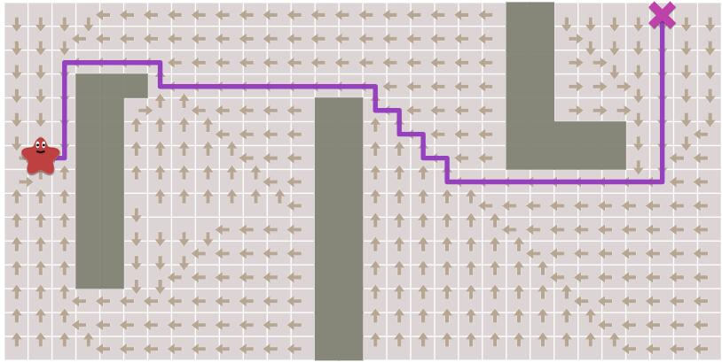
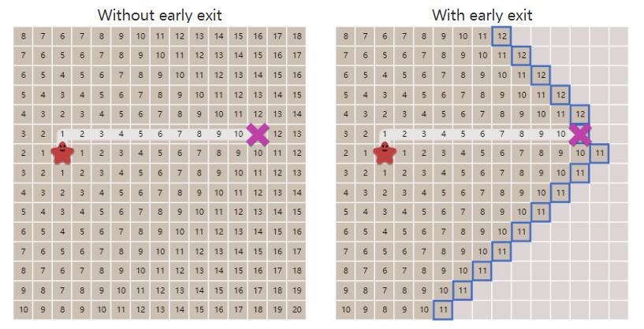
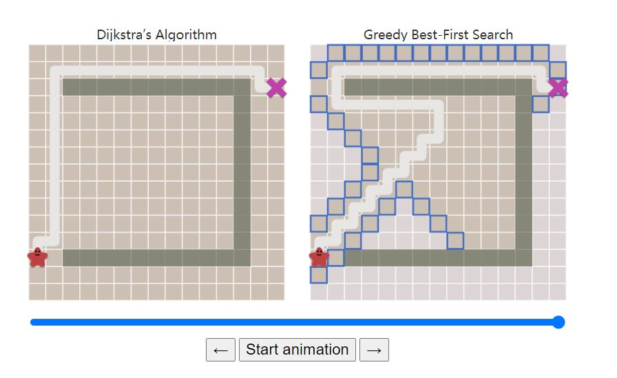

本文是对Introduction to the A* Algorithm的学习笔记
参考路径规划之 A* 算法
图的表示
- 输入:图结构
- 输出:图的结点序列(The path found by A* is made of graph nodes and edges)
Tradeoffs:结点越少,A*速度越快
寻路算法概括
Breadth First Search(BFS)
- 特点:搜寻每个方向的权值相等
- 使用场景:
- regular path finding
- procedural map generation
- flow field pathfinding
- distance maps
- other types of map analysis
Dijkstra[/ˈdɛɪkstra/]’s Algorithm(Uniform Cost Search)
- 特点:优先选择低代价的路径进行搜索
- 使用场景:适合在存在不同代价路径的图中进行搜索
A*
- 是Dijkstra’s Algorithm的改进,针对单个目的地进行了优化
- Dijkstra 算法可以找到所有位置的路径
- A* 查找到一个位置或几个位置中最近的位置的路径。
- 它优先考虑更接近目标的路径
从BFS到A*
朴素BFS
# 计算从start开始到任意点的路径
frontier = Queue()
frontier.put(start)
came_from = dict()
came_from[start] = None
while not frontier.empty():
current = frontier.get()
for next in graph.neighbors(current):
if next not in came_from:
frontier.put(next)
came_from[next] = current
- 通过上述代码可以将从start开始到任意点的路径保存在一个字典结构中,可视化效果如下

# 获得某一个goal到start的路径
current = goal
path = []
while current != start:
path.append(current)
current = came_from[current]
path.append(start) # optional
path.reverse() # optional
提前停止(early exit)
- 对于计算某一点
start到goal的路径,我们不必计算所有的点,只需在找到goal时停止bfs即可. - 通过
提前停止可以减少计算量,可视化如下图

# early exit
frontier = Queue()
frontier.put(start )
came_from = dict()
came_from[start] = None
while not frontier.empty():
current = frontier.get()
if current == goal:
break
for next in graph.neighbors(current):
if next not in came_from:
frontier.put(next)
came_from[next] = current
移动代价(Movement costs)
- 引入Dijkstra’s Algorithm.需要记录移动时的代价.
frontier = PriorityQueue()
frontier.put(start, 0)
came_from = dict()
cost_so_far = dict()
came_from[start] = None
cost_so_far[start] = 0
while not frontier.empty():
current = frontier.get()
if current == goal:
break
for next in graph.neighbors(current):
new_cost = cost_so_far[current] + graph.cost(current, next)
if next not in cost_so_far or new_cost < cost_so_far[next]:
cost_so_far[next] = new_cost
priority = new_cost
frontier.put(next, priority)
came_from[next] = current
Dijkstra算法
详细理解Dijkstra:[最短路径问题]—Dijkstra 算法最详解
Dijkstra是一种基于贪心的算法，它也是BFS的变种,是计算一个非负权图中，某个起始点到其它所有节点最短路径值的算法，即求单源最短路径，也能求最短路径节点顺序。
- 方法参考伪代码
- 相关参数:设
S为已经求得的最短路径的结点,V为图中所有结点的集合,dist[a,b]为a点到b点的相对最短路径(相对最短路劲指的是从a点到b点并且只经过S中的结点的最短路径)- Step 1(Line1-2): 将起始点
s加入到S中,并将dist[s,s]设为0 - Step 2(Line3-4): 计算从
s点开始到其他所有点$v_{i}$的直接路径并写入$dist[s,v_{i}]$(对于无法直接到达的点赋值为 $\infin$) - (Line5):接下去是循环计算每一个点的最短路径,判断条件是 $V-S$是否为空.
- Step 3(Line6-7):在循环中,每次挑选一个路径最短的结点$v_{j}$,并将他加入到
S中 - Step 4(Linr8-10)[
松弛]:对于挑选出的结点$v_{j}$,跟新剩下V-S中的结点,判断是否经过$v_{j}$到b的权值是否更小,并进行更新. - 重复进行循环直到
V-S为空.
- Step 1(Line1-2): 将起始点
- 相关参数:设
为什么每次加入集合S的点就是该点到源点的最小距离？
- 这个问题与Dijkstra算法正确性挂钩，现在就来证明一下：
- （1）因为每次都是找的
V-S中的最小节点值的点加入S，那么加入S的顺序一定是节点到源点最小距离的顺序。 - （2）每次加入
S的节点v一定与S中的节点直接相连，若不然，则存在中间节点连接集合S和点v，那么 一定有比v更小的节点值，与dist[v]最小矛盾。 - （3）对于一个已求得部分节点最短距离的
S集合，下一个加入集合S中的节点必然是S集合中节点的下一邻接点，而根据算法特性，S集合中节点的下一邻接点都被进行松弛更新过，所以V-S中的最小节点值一定是该节点的最短距离。（注意，这里找最小值是为了便于计算，有可能有多个节点的最短距离已经产生，今后也不会再更新，只是他们距离更大一些，所以暂时不被选择）。
- （1）因为每次都是找的
- 简单地说，因为下一个最短距离的节点必然是
S集合的下一邻接点，而选择V-S中最小节点值的节点恰能满足该节点是S的下一邻接点，所以该节点值一定是最短距离。
Dijkstra for pathfinding 代码实现
// Graph with weights
struct GridWithWeights: SquareGrid {
std::unordered_set<GridLocation> forests;
GridWithWeights(int w, int h): SquareGrid(w, h) {}
double cost(GridLocation from_node, GridLocation to_node) const {
return forests.find(to_node) != forests.end()? 5 : 1;
}
};
// Queue with priorities
template<typename T, typename priority_t>
struct PriorityQueue {
typedef std::pair<priority_t, T> PQElement;
std::priority_queue<PQElement, std::vector<PQElement>,
std::greater<PQElement>> elements;
inline bool empty() const {
return elements.empty();
}
inline void put(T item, priority_t priority) {
elements.emplace(priority, item);
}
T get() {
T best_item = elements.top().second;
elements.pop();
return best_item;
}
};
// dijkstra Search(build path map)
template<typename Location, typename Graph>
void dijkstra_search
(Graph graph,
Location start,
Location goal,
std::unordered_map<Location, Location>& came_from,
std::unordered_map<Location, double>& cost_so_far)
{
PriorityQueue<Location, double> frontier;
frontier.put(start, 0);
came_from[start] = start;
cost_so_far[start] = 0;
while (!frontier.empty()) {
Location current = frontier.get();
if (current == goal) {
break;
}
for (Location next : graph.neighbors(current)) {
double new_cost = cost_so_far[current] + graph.cost(current, next);
if (cost_so_far.find(next) == cost_so_far.end()
|| new_cost < cost_so_far[next]) {
cost_so_far[next] = new_cost;
came_from[next] = current;
frontier.put(next, new_cost);
}
}
}
}
```cpp
//build the path
template<typename Location>
std::vector<Location> reconstruct_path(
Location start, Location goal,
std::unordered_map<Location, Location> came_from
) {
std::vector<Location> path;
Location current = goal;
while (current != start) {
path.push_back(current);
current = came_from[current];
}
path.push_back(start); // optional
std::reverse(path.begin(), path.end());
return path;
}
Heuristic search(启发式搜索)
什么是启发式算法
- 启发式算法（Heuristic Algorithm）有不同的定义：一种定义为，一个基于直观或经验的构造的算法，对优化问题的实例能给出可接受的计算成本（计算时间、占用空间等）内，给出一个近似最优解，该近似解于真实最优解的偏离程度不一定可以事先预计；另一种是，启发式算法是一种技术，这种技术使得在可接受的计算成本内去搜寻最好的解，但不一定能保证所得的可行解和最优解，甚至在多数情况下，无法阐述所得解同最优解的近似程度。我比较赞同第二种定义，因为启发式算法现在还没有完备的理论体系，只能视作一种技术。
- 互动百科解释:人在解决问题时所采取的一种根据经验规则进行发现的方法。其特点是在解决问题时,利用过去的经验,选择已经行之有效的方法，而不是系统地、以确定的 步骤去寻求答案。启发式解决问题的方法是与算法相对立的。算法是把各种可能性都一一进行尝试，最终能找到问题的答案，但它是在很大的问题空间内，花费大量 的时间和精力才能求得答案。启发式方法则是在有限的搜索空间内，大大减少尝试的数量，能迅速地达到问题的解决。但由于这种方法具有尝试错误的特点，所以也 有失败的可能性。科学家的许多重大发现，常常是利用极为简单的启发式规则。
Greedy Best First Search(最佳优先搜索)
- 在一些情况下，如果我们可以预先计算出每个节点到终点的距离，则我们可以利用这个信息更快的到达终点。
# 定义曼哈顿距离
def heuristic(a, b):
# Manhattan distance on a square grid
return abs(a.x - b.x) + abs(a.y - b.y)
- 其原理也很简单。与Dijkstra算法类似，我们也使用一个优先队列，但此时以每个节点到达终点的距离作为优先级，每次始终选取到终点移动代价最小（离终点最近）的节点作为下一个遍历的节点。这种算法称之为最佳优先（Best First）算法。
# Greedy Best First Search
frontier = PriorityQueue()
frontier.put(start, 0)
came_from = dict()
came_from[start] = None
while not frontier.empty():
current = frontier.get()
if current == goal:
break
for next in graph.neighbors(current):
if next not in came_from:
priority = heuristic(goal, next)
frontier.put(next, priority)
came_from[next] = current
Greedy Best First Search的问题
- 如果起点和终点之间存在障碍物，则最佳优先算法找到的很可能不是最短路径，下图描述了这种情况。

The A* algorithm
- A算法结合了Djikstra和Greedy Best First的特点. A 通过以下函数来计算每个结点的优先级:
- 其中,
f(n)是节点n的综合优先级。当我们选择下一个要遍历的节点时，我们总会选取综合优先级最高（值最小）的节点。 - 其中,
g(n)就是在Djikstra算法中计算的离起始点的距离,我们在Djikstra中取g(n)值最小的作为最高优先级 - 其中,
h(n)为A*算法的启发函数,计算节点n距离终点的预计代价(距离).取h(n)值最小的作为最高优先级
- 其中,
- A*算法在运算过程中，每次从优先队列中选取f(n)值最小（优先级最高）的节点作为下一个待遍历的节点。
- A* 伪代码
- open_set 为待遍历的结点
- close_set 为已经遍历的结点
```cpp
- 初始化open_set和close_set；
- 将起点加入open_set中，并设置优先级为0（优先级最高）；
- 如果open_set不为空，则从open_set中选取优先级最高的节点n：
- 如果节点n为终点，则：
- 从终点开始逐步追踪parent节点，一直达到起点；
- 返回找到的结果路径，算法结束；
- 如果节点n不是终点，则：
- 将节点n从open_set中删除，并加入close_set中；
- 遍历节点n所有的邻近节点：
- 如果邻近节点m在close_set中，则：
- 跳过，选取下一个邻近节点
- 如果邻近节点m也不在open_set中，则：
- 设置节点m的parent为节点n
- 计算节点m的优先级
- 将节点m加入open_set中
```
- 如果邻近节点m在close_set中，则：
- 如果节点n为终点，则：
- A* python伪代码
frontier = PriorityQueue()
frontier.put(start, 0)
came_from = dict()
cost_so_far = dict()
came_from[start] = None
cost_so_far[start] = 0
while not frontier.empty():
current = frontier.get()
if current == goal:
break
for next in graph.neighbors(current):
new_cost = cost_so_far[current] + graph.cost(current, next)
if next not in cost_so_far or new_cost < cost_so_far[next]:
cost_so_far[next] = new_cost
priority = new_cost + heuristic(goal, next)
frontier.put(next, priority)
came_from[next] = current
深入启发函数
上面已经提到，启发函数会影响A*算法的行为。
在极端情况下，当启发函数
h(n)始终为0，则将由g(n)决定节点的优先级，此时算法就退化成了Dijkstra算法。如果h(n)始终小于等于节点n到终点的代价，则A*算法保证一定能够找到最短路径。但是当h(n)的值越小，算法将遍历越多的节点，也就导致算法越慢.如果
h(n)完全等于节点n到终点的代价，则A*算法将找到最佳路径，并且速度很快。可惜的是，并非所有场景下都能做到这一点。因为在没有达到终点之前，我们很难确切算出距离终点还有多远.如果h(n)的值比节点n到终点的代价要大，则A*算法不能保证找到最短路径，不过此时会很快在另外一个极端情况下，如果
h(n)相较于g(n)大很多，则此时只有h(n)产生效果，这也就变成了最佳优先搜索。
由上面这些信息我们可以知道，通过调节启发函数我们可以控制算法的速度和精确度。因为在一些情况，我们可能未必需要最短路径，而是希望能够尽快找到一个路径即可。这也是A*算法比较灵活的地方。
对于网格形式的图，有以下这些启发函数可以使用：
如果图形中只允许朝上下左右四个方向移动，则可以使用曼哈顿距离（Manhattan distance）。
function heuristic(node) = # D是指两个相邻节点之间的移动代价,通常是一个固定的常数 dx = abs(node.x - goal.x) dy = abs(node.y - goal.y) return D * (dx + dy)如果图形中允许朝八个方向移动，则可以使用对角距离。
# 这里的D2指的是两个斜着相邻节点之间的移动代价。如果所有节点都正方形，则其值就是sqrt(2)*D function heuristic(node) = dx = abs(node.x - goal.x) dy = abs(node.y - goal.y) return D * (dx + dy) + (D2 - 2 * D) * min(dx, dy)如果图形中允许朝任何方向移动，则可以使用欧几里得距离（Euclidean distance）。
# 欧几里得距离是指两个节点之间的直线距离 function heuristic(node) = dx = abs(node.x - goal.x) dy = abs(node.y - goal.y) return D * sqrt(dx * dx + dy * dy)
A*代码实现
//A* algorithm
inline double heuristic(GridLocation a, GridLocation b) {
return std::abs(a.x - b.x) + std::abs(a.y - b.y);
}
template<typename Location, typename Graph>
void a_star_search
(Graph graph,
Location start,
Location goal,
std::unordered_map<Location, Location>& came_from,
std::unordered_map<Location, double>& cost_so_far)
{
PriorityQueue<Location, double> frontier;
frontier.put(start, 0);
came_from[start] = start;
cost_so_far[start] = 0;
while (!frontier.empty()) {
Location current = frontier.get();
if (current == goal) {
break;
}
for (Location next : graph.neighbors(current)) {
double new_cost = cost_so_far[current] + graph.cost(current, next);
if (cost_so_far.find(next) == cost_so_far.end()
|| new_cost < cost_so_far[next]) {
cost_so_far[next] = new_cost;
double priority = new_cost + heuristic(next, goal);
frontier.put(next, priority);
came_from[next] = current;
}
}
}
}